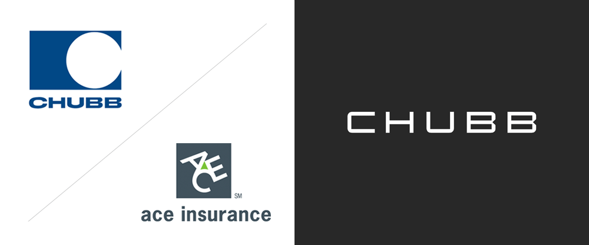
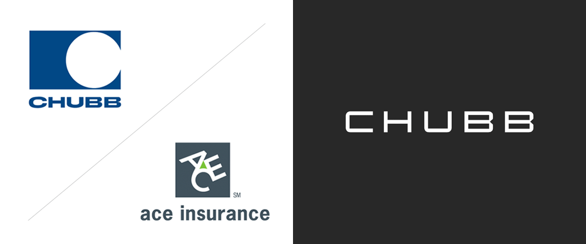

Hima Mistry
My Experiences
Over the course of my four years at Drexel, I was able to receive professional experiences in three different industries. My latest professional experience was at Goldman Sachs Asset Management in New York City. I was able to dive into investments in equity through a multitude of projects. I have developed critical thinking and problem solving skills by conducting analyses on stock attribution and portfolio construction. I gained advanced skills in Excel, in addition to the ability to think analytically by calculating annualized returns, information ratio, and upside/downside capture for value equity portfolios. At Grant Thornton, my second experience, I I was able to establish rapport with all levels of clients through multifaceted projects with seven different teams, develop financial valuations, and conduct fundamental market research. I conducted net present value (NPV) calculations and analyzing financial statements resulting in $800K in cost savings. Lastly, at Chubb, an insurance firm, I was a international finance co-op where I prepared various financial statements, conducted monthly summaries and conversions.
In terms of my career aspirations, I want to be working in client facing role that incorporates my technical skills and creative skills. I hope to work at Google as the Partner Marketing Lead for Google Cloud. I would be able to shape the future of Chrome and Google enterprise services around the world, defining the global marketing strategy to bring the magic of Google to consumers. I would be using both my quantitative and qualitative skills along with creative judgment to develop strategies for stakeholders.
 
